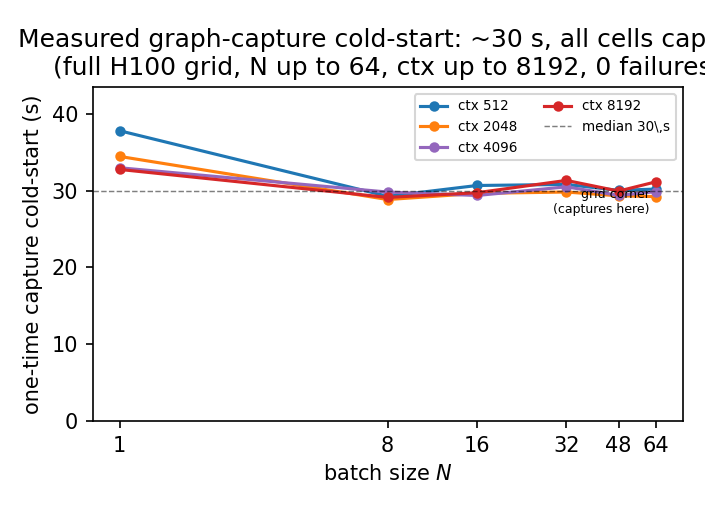
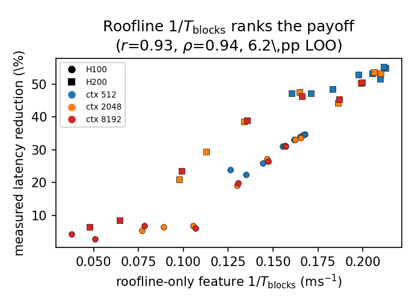
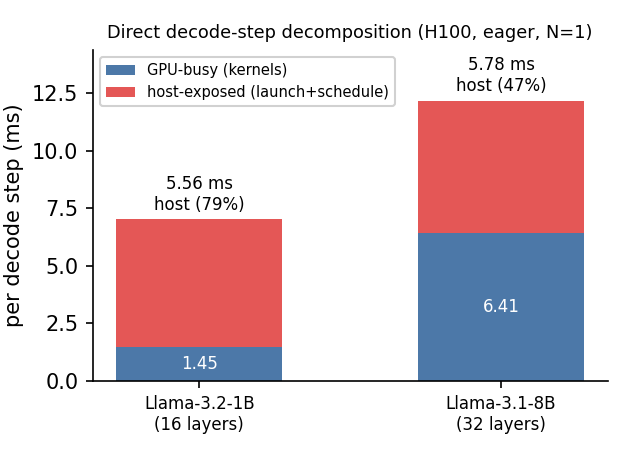

The Whole Story in One Minute
Every modern LLM engine offers CUDA-graph capture, which records the hundreds of kernel launches a decode step issues and replays them with a single submission, erasing most per-step host overhead. Operators treat it as ‘free latency,’ but it is not uniformly free: on the same Llama-3.1-8B and the same GPU, the decode latency reduction swings from 2.9% to 55.3% depending only on batch size and context length, and capture itself costs a one-time ~30 s cold-start. This study is an empirical characterization: a measured regime map of when capture pays off, the measured cold-start cost it is amortized against, and a cheap roofline feature an operator can use to rank configurations before measuring any of them.
1 · A measured regime map
Across 46 measured cells the decode latency reduction (t_eager − t_graph)/t_eager ranges 2.9–34.7% on H100 and 6.6–55.3% on H200 (grid-mean 31.9%; the largest cell is a 2.24× speedup, H200 N = 2 ctx 512, 10.80 → 4.83 ms). The map reports the context-ordered crossover batch N* where the reduction first drops below 10% (short contexts pay off through N = 64; H100 ctx 8192 collapses by N = 8) and the near-linear throughput amortization in the host-bound regime.
2 · The measured cold-start cost
The steady-state reduction excludes capture's one-time cost by construction. A dedicated probe measures it across a full H100 grid in isolated subprocesses: 28.8–37.8 s per configuration (median 29.9 s), dominated by the fixed engine/model build rather than by (N, ctx). Against a per-step removal of ~3.4 ms, break-even is on the order of 10⁴ decode steps — trivially repaid by a long-lived replica, but a real cost for short-lived or frequently-rebuilt deployments.
3 · Roofline already ranks the payoff
For a cheap pre-capture screen, the block-time transform 1/T_blocks — computed from a frozen single-GPU roofline model with zero access to the graph-vs-eager measurements — ranks the latency reduction at Pearson r = 0.93 and 6.2 pp leave-one-cell-out. The mechanism is direct: shorter GPU kernels mechanically expose more host overhead, which capture removes. This is the natural pre-deployment ranker; the contribution is the map plus this operator guidance, not a new scalar.
4 · Two honest negatives
We do not propose a new scalar indicator. A host-scale normalization (a ‘host-overlap fraction’ φ) of the same roofline time is essentially a monotone transform of it (corr = 0.97 with −T_blocks) and does not beat 1/T_blocks — reported as a negative result, not a contribution. Separately, an earlier draft called the two largest-footprint cells (N = 64, ctx 8192) an infeasibility boundary; a clean isolated re-run captures at all 24 cells (0 failures), so we retract that claim — the grid gaps were transient, not a capacity limit.
Why Graph Capture Is Not Uniformly Free
No background is assumed. Three ideas are enough to follow the rest: what a decode step costs, what CUDA-graph capture removes, and why the classic roofline cannot predict whether removing it helps.
Two clocks run at once: the GPU and the host
To write one token the model runs its full forward pass, which on the GPU is a long list of small programs called kernels. While the GPU executes them, a CPU-side host — the Python scheduler and the runtime — is busy too: dequeuing the running batch, updating sequence state, mapping paged-KV blocks, building kernel arguments, and issuing each launch. A step's wall-clock time is a race between the GPU-compute time of running the kernels and this per-step host floor. When the GPU kernels are long (large batch, long context), the host work hides behind them; when the kernels are short, the host floor is exposed on the critical path.
Host floor (CPU + Python)
schedules the step and issues the kernel launches; this is the per-step host overhead capture targetsThe GPU shadow
part of the host floor can hide behind GPU compute — the longer the kernels, the bigger the shadowExposed host = what graphs can recover
whatever does not fit in the shadow is exposed wall-clock time — the part capture removes, large when kernels are shortCUDA-graph capture: record once, replay with one launch
In eager mode, Python re-issues every kernel launch and runs the scheduler on the critical path each token. CUDA-graph capture records the fixed launch sequence once and replays it as a single submission, eliminating per-launch CPU cost and most framework dispatch. But the benefit is bounded by how much host work was on the critical path to begin with. When the GPU kernels are long (large batch, long context, KV-read-bound decode) the host work is already hidden behind compute and capture buys little; when the kernels are short, the exposed host floor dominates and capture buys a lot. That is the whole regime story — and it is exactly what a GPU-time roofline already encodes.
Why roofline already orders the payoff
The classic roofline predicts the GPU step as max(compute, memory). Its GPU-time output T_blocks has no explicit host axis, yet it already orders configurations by how much host overhead capture can expose: small T_blocks means short kernels, which means the host floor is exposed and capture helps; large T_blocks means long kernels that already hide the host work. So the block-time transform 1/T_blocks — computed from a frozen single-GPU predictor with datasheet constants and zero access to the graph-vs-eager measurements — is a cheap pre-capture ranker. No host axis needs to be added.
Measure the Map, Then Rank with Roofline
The protocol has two parts. First, measure: run vLLM twice per cell (eager and graph capture) and measure the per-decode-step latency reduction — this is the regime map. Second, rank: compute the frozen roofline feature 1/T_blocks per cell, with no sight of the measurements, and check how well it orders the measured reduction. The lines in the figures are single global descriptive fits, not per-cell calibrations. A separate probe measures the one-time capture cold-start cost in isolated subprocesses.
Isolating one decode step
For N prompts of length ctx the engine generates T = 65 tokens with the ignore-eos flag and greedy sampling. The steady-state per-decode-step time is recovered by a subtraction over the high-level generation API that cancels the fixed prefill and startup overhead, leaving the decode work alone. Sampling and detokenize are included.
Fresh runs on PACE Phoenix: Llama-3.1-8B-Instruct, bf16, TP-1 (the model fits on one device, so eager-vs-graph is isolated without distributed confounds), vLLM 0.19.1.dev, PyTorch 2.10+cu126; eager and graph are run as separate jobs. The sweep is batch N ∈ {1, 2, 4, 8, 16, 32, 48, 64} and context {512, 2048, 8192}, with a target of 15 timed reps per cell after 2 warmups, reported as medians with bootstrap 95% CIs; capture happens during warmup, so the steady-state reduction excludes the one-time cost (measured separately). Cross-SKU claims use only the cells present in both modes on both SKUs — 46 cells total. The roofline GPU constants are datasheet/ncu values; nothing in the ranker is fit to the reductions it predicts.
A worked example
For H100, N = 1, ctx 512 the frozen roofline gives a short GPU block time (T_blocks = 5.97 ms), so 1/T_blocks is large — a host-bound cell the ranker flags as high-payoff. The measured eager step is 9.31 ms and the graph step 6.08 ms, a 34.7% latency reduction (95% CI [34.6, 35.0]) — capture pays, exactly as the ranker orders it. At the opposite end, a long-context large-batch cell has a large T_blocks (long kernels), 1/T_blocks is small, and the measured reduction collapses below 10%.
The Regime Map, the Cold-Start, and a Roofline Ranker
The measured latency-reduction range
Across the 46 measured cells the decode latency reduction (t_eager − t_graph)/t_eager spans 2.9–34.7% on H100 and 6.6–55.3% on H200 (2.9–55.3% pooled; grid-mean 31.9%). Reported as a speedup factor t_eager/t_graph the range reaches 2.24× (the largest-reduction cell, H200 N = 2 ctx 512, 10.80 → 4.83 ms). Short contexts stay host-bound (large reduction across the sweep) while long contexts shift compute-bound as KV-read GPU work grows. We caution that part of the larger H200 reduction reflects a worse H200 eager baseline, not only faster H200 kernels.

Measured eager vs graph decode step times across the grid. The gap is the latency reduction graph capture buys: large in the host-bound regime (short kernels), shrinking toward zero as kernels lengthen with batch and context.
| SKU | #cells | reduction range | top speedup factor |
|---|---|---|---|
| H100 | 23 | 2.9–34.7% | 1.53× |
| H200 | 23 | 6.6–55.3% | 2.24× |
| pooled | 46 | 2.9–55.3% | 2.24× |
Measured decode latency reduction (t_eager − t_graph)/t_eager across 46 cells; grid-mean 31.9%. The top cell (H200 N = 2 ctx 512) is a 2.24× speedup factor (10.80 → 4.83 ms).
The regime map: a context-ordered crossover
Plotting the latency reduction against batch N per context exposes a crossover batch N* where graph payoff first drops below 10%, and it is context-ordered. At H100 ctx 512 decode is host-bound at every batch measured and never collapses through N = 64; at ctx 2048 it collapses at N = 32; at ctx 8192 the step is compute-bound (long KV reads) and collapses by N = 8. Larger context puts more KV-read work on the GPU and moves the crossover to smaller batch. H200's higher bandwidth keeps it host-favorable longer: ctx 2048 never collapses, and ctx 8192 collapses only at N = 32. The 10% threshold is a convention, not a hard boundary — with the measured capture cold-start cost (below) an operator should set it from break-even — and the boundary is soft: 3 of the 9 collapse cells are H100 ctx 2048.

Regime map: measured latency reduction vs batch N per context (95% CIs). Dotted verticals mark the crossover N* (reduction < 10%); the dashed line is the 10% threshold. Short contexts (ctx 512) stay host-bound and keep paying off through N = 64; long contexts (ctx 8192) become compute-bound and collapse early. The N = 64, ctx 8192 corner was not collected by the grid run on either SKU — not an infeasibility boundary: capture completes there in the cold-start probe below.
| SKU | ctx 512 | ctx 2048 | ctx 8192 |
|---|---|---|---|
| H100 | — | N* = 32 | N* = 8 |
| H200 | — | — | N* = 32 |
Crossover batch N* where the measured latency reduction first drops below 10% (‘—’ = never collapses through N = 64). Larger context becomes compute-bound at smaller N. The threshold is a convention; an operator should set it from break-even against the measured cold-start cost.
Host-bound throughput is near-linear in batch
The host floor S(N) is paid once per step and grows only weakly with batch (0.20 ms/req), so in the host-bound regime adding requests to a step is nearly free per request. Decode throughput is near-linear in N — 56× from N = 1 to N = 64 at H100 ctx 512, and 56× on H200. It saturates only once the step crosses the compute knee, where each added request lengthens the GPU kernels: 19× at H100 ctx 8192, 25× at H200 ctx 8192. The corrected reading is that host-bound batches amortize the shared host term (near-linear), and saturation appears past the compute knee — not at the latency crossover N*.

Eager decode throughput (req/s) vs batch N (H100, log–log). In the host-bound regime (ctx 512) batching amortizes the shared per-step host floor, giving near-linear scaling (56× at N = 64); only past the compute knee (ctx 8192) does it saturate (19×).
Decode throughput scale-up from N = 1 to N = 64: near-linear (56×) in the host-bound ctx-512 regime, saturating (19–25×) once past the compute knee at ctx 8192.
The cold-start cost (and a retracted infeasibility claim)
The regime map measures the steady-state reduction, which excludes capture's one-time cost by construction (capture happens during warmup). A dedicated probe (H100) builds vLLM in an isolated subprocess for every cell and records the capture cold-start time. Across all 24 graph cells it is 28.8–37.8 s per configuration (median 29.9 s), essentially flat across (N, ctx) — dominated by the fixed engine/model build, not by batch or context. Against a per-step removal of ~3.4 ms (grid mean), break-even is on the order of 10⁴ decode steps: trivially repaid by a long-lived decode replica, a real cost for short-lived or frequently-rebuilt deployments. This turns the 10% crossover from a convention into a cost-tied decision.

Measured one-time CUDA-graph capture cold-start (s) per configuration across the full H100 grid (24 graph cells). Capture completes at every cell (0 failures), including the N = 64, ctx 8192 corner the grid run had failed to collect (31.1 s). The cold-start is ≈flat at the median (29.9 s), dominated by the fixed engine/model build; small-batch cells are slightly higher.
Operator guidance: a roofline ranker
For a cheap pre-capture screen, the block-time transform 1/T_blocks — computed from the frozen single-GPU predictor with no host axis and zero access to the measurements — ranks the measured latency reduction at Pearson r = 0.93, Spearman ρ = 0.94, and 6.2 pp leave-one-cell-out. Given (N, ctx, SKU) an operator computes T_blocks from datasheet constants and ranks which configurations are most likely to repay capture's cold-start cost, before measuring any of them. The host-scale normalization φ we explored is worse on every metric (r = 0.75 vs 0.93; 11.6 pp vs 6.2 pp leave-one-cell-out) and is nearly collinear with −T_blocks (corr = 0.97), so we report it only as the negative result that establishes roofline as the right baseline.

Roofline-only ranker: measured latency reduction vs the pre-capture feature 1/T_blocks, all 46 cells (H100 circles, H200 squares; color = context). The feature is computed from a frozen single-GPU predictor with no access to the measurements; it ranks the payoff at Pearson r = 0.93, Spearman ρ = 0.94 (6.2 pp leave-one-cell-out) — the natural pre-deployment screen.

The negative result: the host-scale ‘host-overlap indicator’ φ vs measured latency reduction (same 46 cells). It tracks the payoff only ordinally (r = 0.75) and ranks worse than the plain roofline feature above — it is essentially a monotone transform of −T_blocks (corr = 0.97), so it adds nothing and we do not propose it.
A Pre-Deployment Decision Tool
What capture removes, measured directly
The host-exposed term capture targets can be measured directly. A separate nsys decomposition — differencing two whole-process runs at 1 vs 512 decode tokens to cancel load, warmup, and prefill — splits the 8B decode step (H100, eager, N = 1, ctx 2048) into 12.19 ms wall = 6.41 ms GPU-kernel + 5.78 ms (47%) host-exposed (launch + Python scheduling, no overlapping kernel). That host-exposed term is an upper bound on what capture can remove; at the matched grid cell capture removes ~3.15 ms, about 54% of it. As a causal control, the 1B step is 6.41→1.45 ms less GPU work yet the host-exposed term barely moves (5.78→5.56 ms, 3.8% apart) — consistent with a nearly model-size-insensitive host floor. This is the per-step host overhead the whole regime map is about.

Direct decode-step decomposition (H100, eager, N = 1, ctx 2048) from differencing two whole-process nsys runs (1 vs 512 decode tokens) — a separate mechanism probe, not a grid cell. The host-exposed term (launch + scheduling, no overlapping kernel) is an upper bound on what graph capture removes: 5.78 ms at 8B and 5.56 ms at 1B (within 3.8% despite the larger 8B GPU-kernel time), consistent with a nearly model-size-insensitive host floor.
The value of the result divides by audience. For operators it is a decision tool that needs no profiling run; for model builders it is a precise statement of where a roofline mechanism model can be extended to predict graph payoff and where it cannot pretend to be tight.
For operators
Given (N, ctx, SKU) you can rank configurations by 1/T_blocks from datasheet constants — no profiling run — and decide whether CUDA-graph capture's measured ~30 s cold-start is worth it before capturing, setting your own break-even threshold from the per-step gain. Decode-only replicas in prefill/decode-disaggregated serving run exactly in the small-kernel, host-bound regime where capture pays most; chunked prefill raises the GPU term and pushes a step toward the compute-bound side where it does not. Capture is feasible across the whole grid, so the decision is cost amortization, not feasibility.
For model builders
A standard GPU-time roofline already orders CUDA-graph payoff well (1/T_blocks: r = 0.93, 6.2 pp leave-one-cell-out), because shorter kernels mechanically expose more host overhead. No new host axis is needed: a host-scale normalization of the same roofline time is essentially a monotone transform of it (corr = 0.97 with −T_blocks) and ranks worse. The ranker is least accurate in the long-context KV-read tail where the roofline GPU-time estimate is loosest; we present it as a coarse pre-capture screen, not a cell-by-cell predictor, and report no absolute-ms host product.
This page is part of a host-term portfolio: a family of measurement studies that isolate the per-step host/scheduler term in LLM decode and ask what it predicts, what removes it, and how it scales. Back to the portfolio →
Exactly What Was Measured
The claims are deliberately bounded. Each item names a specific way the result could be over-read and the precise scope that remains valid.
- A map and a ranker, not best-in-class regression. The roofline feature 1/T_blocks orders the payoff (r = 0.93, 6.2 pp leave-one-cell-out); it is a coarse-regime screen, not a predictor of the exact ms saved. The host-scale normalization φ is worse, and the host product φS is not removable milliseconds (it over-predicts the actual removal by ~4×). We claim a regime map and an operator screen.
- Interpolation, not prospective prediction. Leave-one-cell-out is interpolation; the roofline feature holds under leave-one-context (6.5 pp) while the host-scale normalization collapses (32.6 pp). We scope the screen to coarse-regime separation on this grid.
- No infeasibility boundary. The N = 64, ctx 8192 cells the grid run failed to collect are NOT an infeasibility boundary — the cold-start probe captures cleanly there (0 failures at all 24 cells), so the grid gaps were transient. We retract the earlier infeasibility claim.
- Cold-start cost is H100-only and time-only. The capture cold-start (median 29.9 s) is a point measurement per cell (no reps/CI) and was not re-run on H200; the probe's torch peak-memory counters read zero, so we report the cold-start time but not a clean capture-memory overhead.
- Host-side controls and a baseline caveat. We did not pin CPU affinity/NUMA or fix the CPU governor; eager and graph were separate jobs. The H200 eager step is slower than H100 at small contexts, so part of the larger H200 reduction reflects a worse eager baseline, not only faster kernels (the regime ordering is robust to it). Two graph cells fell short of the 15-rep target and are disclosed as low-confidence.
- Coverage. Llama-3.1-8B, TP-1, vLLM eager-vs-graph, H100/H200, batch ≤ 64, ctx ≤ 8192. Other models, tensor/pipeline parallelism (where the host term and graph behavior differ), other engines, and FP8 are out of scope. The regime-map, crossover, and capture-cost statements are scoped to this grid.
The conclusions hold for Llama-3.1-8B in BF16, TP-1, on the single-GPU PACE SKUs H100 and H200, over the 46 cells present in both eager and graph modes on both SKUs, with the capture cold-start measured on a full H100 grid. The contribution is a measurement/characterization: the regime map of when capture pays off, the measured cold-start cost the payoff is amortized against, and a frozen roofline feature as the operator-facing ranker — all scoped to the measured grid, with no new scalar indicator proposed.